Real-Time HR Monitoring Dashboard
Project Overview
This project is a real-time HR monitoring dashboard built using Grafana to track workforce dynamics, attendance performance, employee lifecycle metrics, and operational HR indicators. The dashboard is designed to help management monitor employee conditions and support data-driven HR decision-making.
The dashboard supports dynamic filtering by division and employment status. It also uses JavaScript-based business charts to create interactive and visually rich analytics panels.
Objectives
- Monitor workforce metrics in real time through Grafana.
- Analyze employee composition, employment status, and demographic distribution.
- Track employee growth, resignation trends, turnover rate, and attendance performance.
- Provide interactive filtering by division and employment status.
- Support HR decision-making through dynamic charts and visual insights.
Tools & Technologies
Key Features
1. Real-Time Workforce Overview
Provides key HR metrics such as total employees, active employees, new hires, resigned employees, and attendance rate. This section allows management to monitor current workforce conditions at a glance.
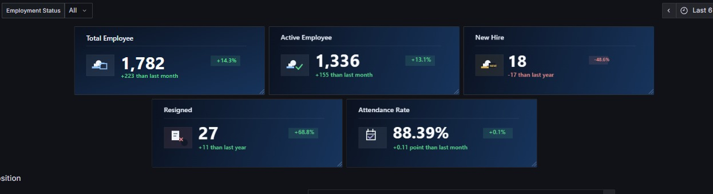
Real-Time Workforce KPI Overview
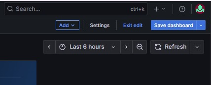
Time Range & Auto Refresh Controls
2. Interactive Filtering
The dashboard supports dynamic filtering by division and employment status. Users can drill down into specific organizational segments to analyze employee composition and performance more precisely.
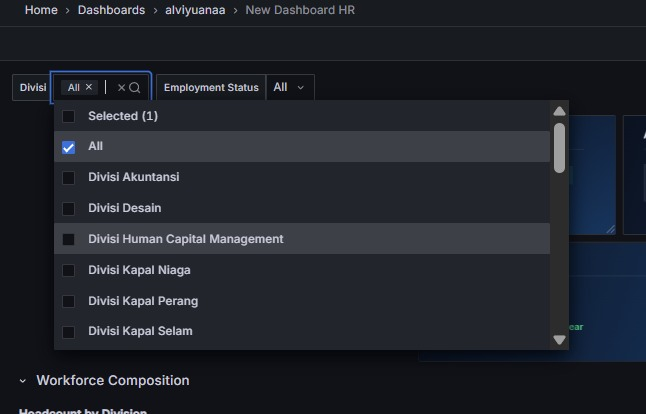
Division Filter
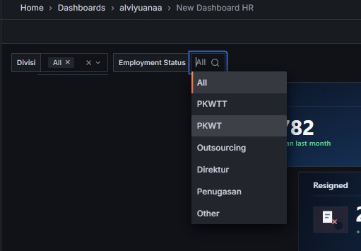
Employment Status Filter
3. Workforce Composition
Visualizes employee distribution by division, employment status, gender, age group, tenure, and contract type. This helps HR understand workforce structure and resource allocation.
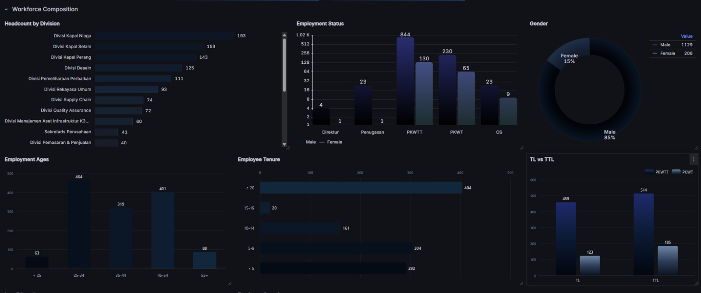
Workforce Composition by Division & Status
4. Employee Growth & Turnover
Tracks employee inflow and outflow trends over time, including hiring patterns, resignation trends, turnover rate, resignation reasons, and early turnover indicators.
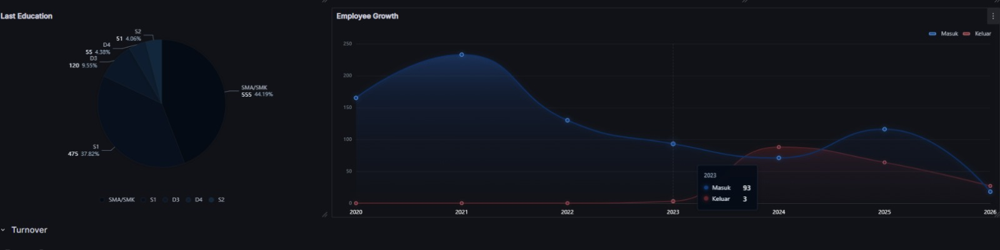
Employee Growth Trend
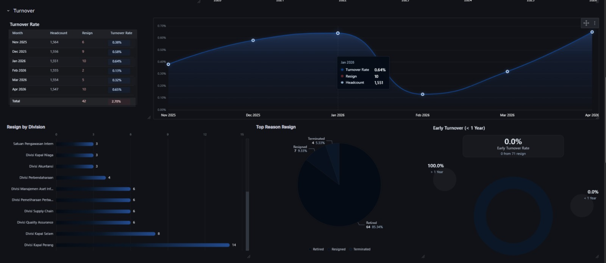
Turnover Rate Analysis
5. Attendance & Time Management
Monitors attendance rate, absence distribution by division, leave utilization, overtime, late cases, and sick leave. This section supports workforce discipline monitoring and operational productivity analysis.
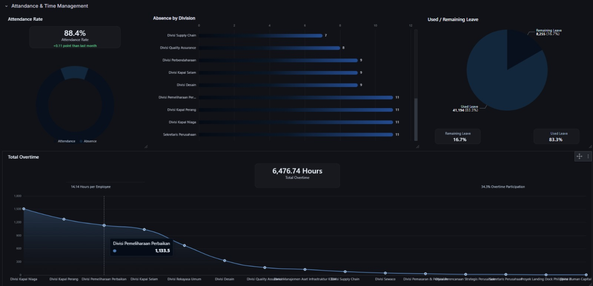
Attendance, Absence & Leave Utilization
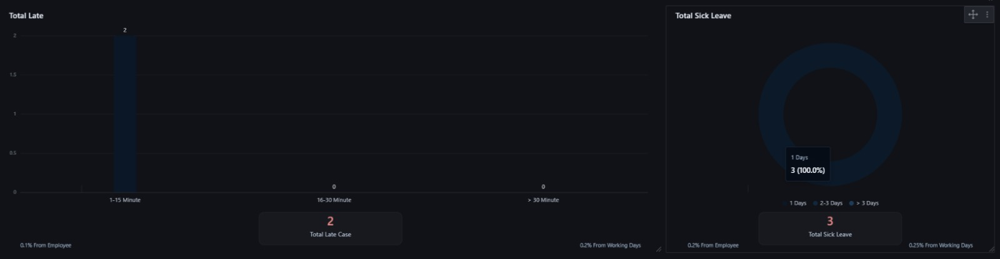
Late Case & Sick Leave Monitoring
6. JavaScript-Based Business Charts
Several panels use JavaScript-based business charts to improve interactivity, visual clarity, and analytical storytelling. This allows the dashboard to provide more customized visuals compared to standard Grafana panels.
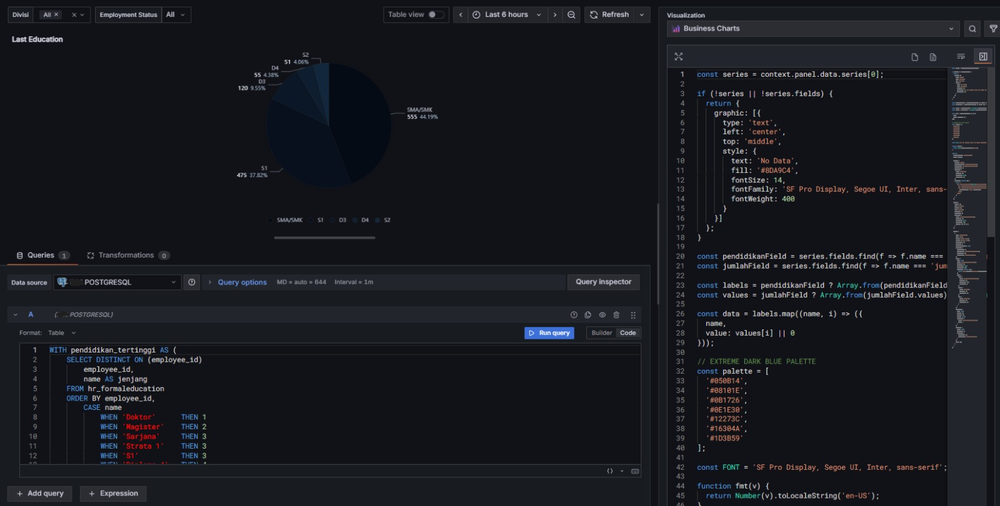
Custom Business Chart Visualization
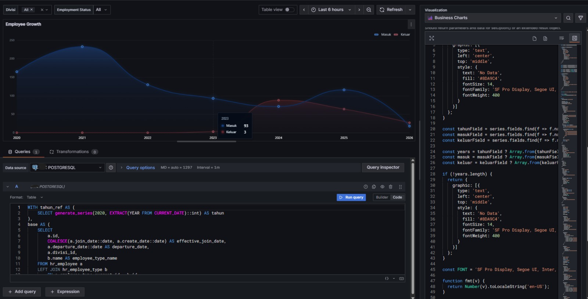
Interactive JavaScript Chart Panel
Results & Impact
- Built a real-time HR monitoring dashboard using Grafana.
- Enabled management to monitor workforce KPIs, turnover, attendance, and leave usage.
- Provided interactive filtering by division and employment status for deeper analysis.
- Improved visual storytelling using JavaScript-based business charts.
- Supported HR decision-making through centralized and real-time workforce insights.